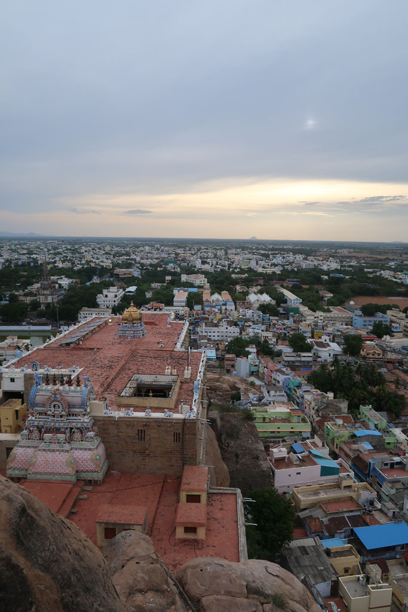
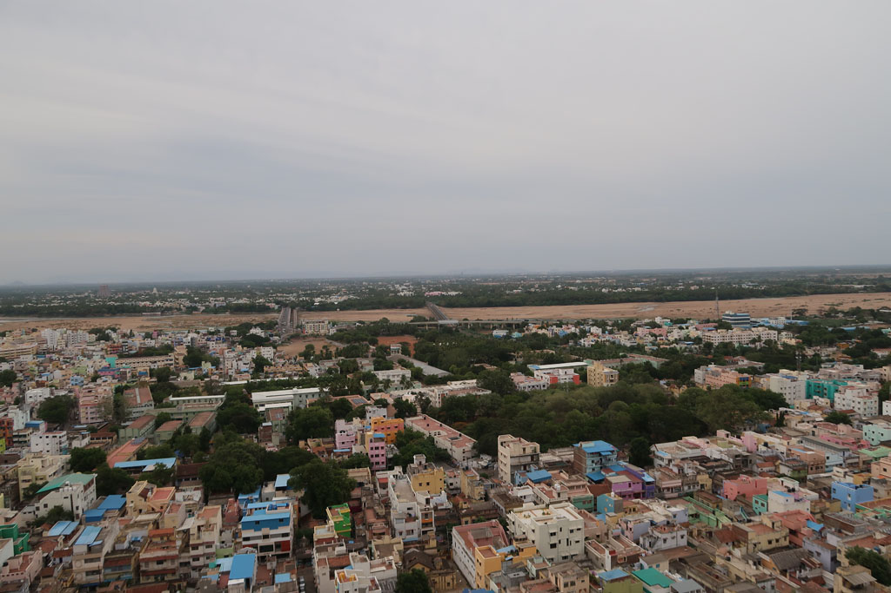
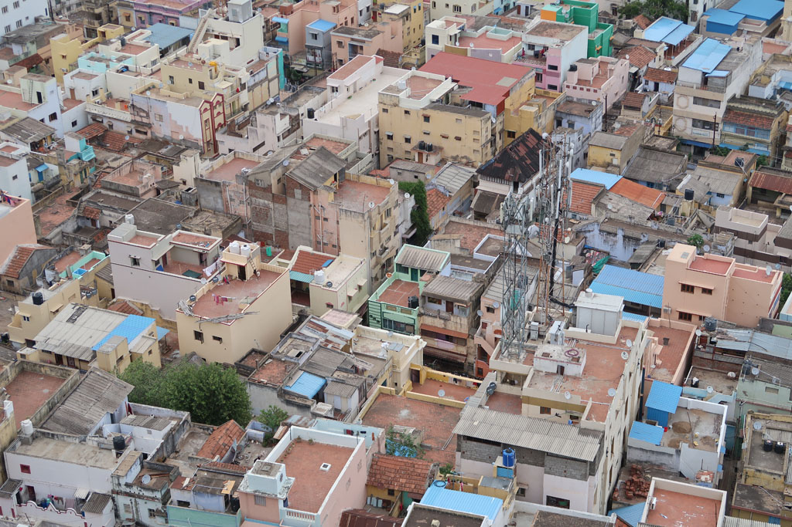
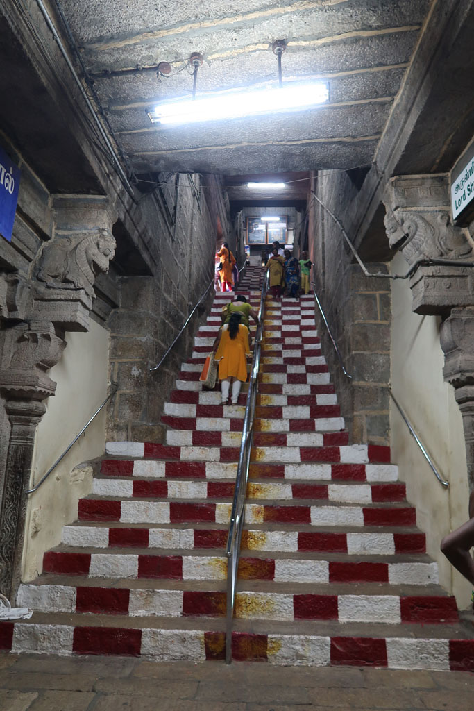
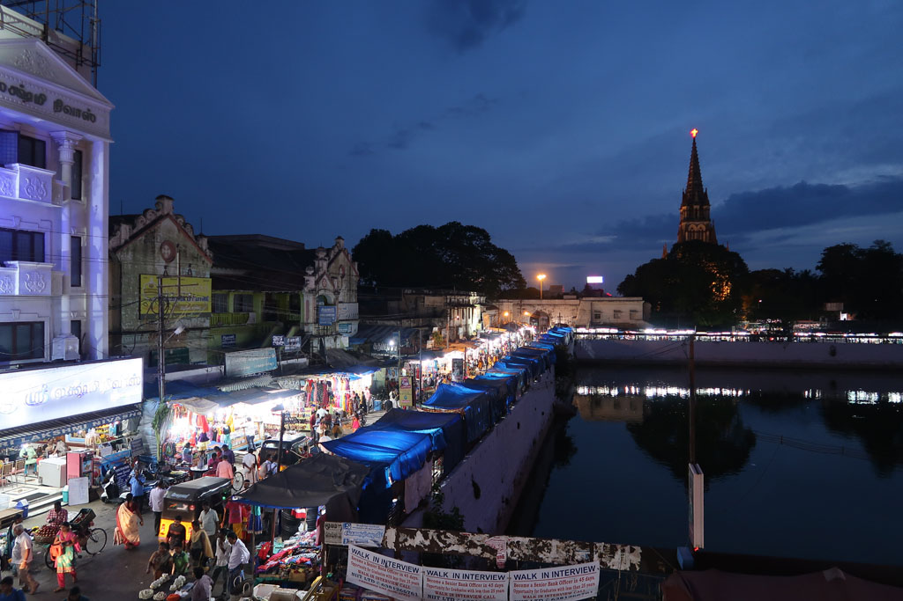
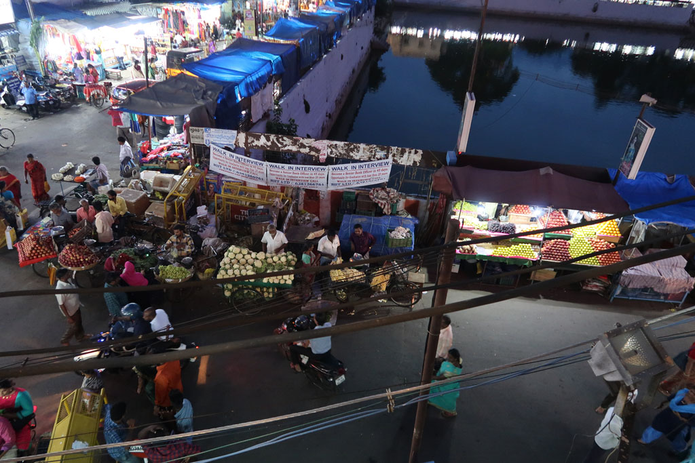

Tamil Nadu / Trichy
7h00 Réveil.
8h00 Tuk tuk pour le temple, en sortant café, gâteaux et boissons.
10h00 Tuk Tuk pour un deuxième temple dédié à l’eau, l’entrée est noyée, le pèlerin comme le visiteur doit patauger.
11h30 Tuk tuk de retour vers le centre ville. Mais le chauffeur n’a pas tout compris et nous dépose à la gare ferroviaire. On retourne au restaurant du soir. Dhal, Briyani, fried rice, nouilles sautées, lemon juice, x2, soda, lemon soda 325R






12h40 Retour hôtel, repos.
16h00 après une petite sieste nous partons à pieds en direction du musée du train (45R)
17h00 Tuk tuk pour le rock fort temple
18h00 Après cette superbe visite, nous partons en balade autour du Gat non loin. Achat de tasses à café. Nous allons manger face au réservoir. Butter naan, fried noodles, puri chola, onion dosa, ananas juice, lemon juice x3 470R
20h00 Balade nocturne dans les rues. Dans un magasin de sport nous renouvelons notre matériel pour le Carom, avant de prendre un tuk tuk pour notre hôtel.